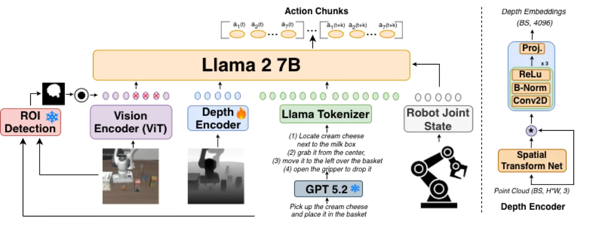
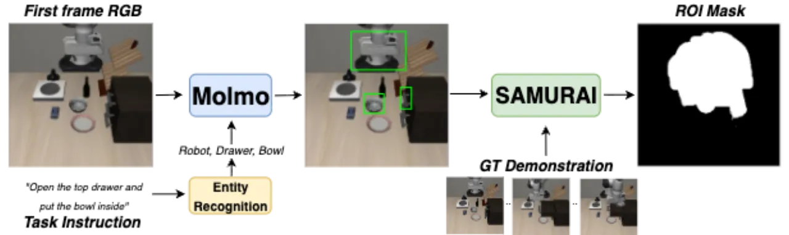
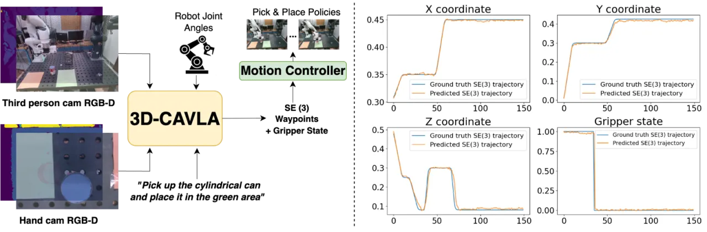
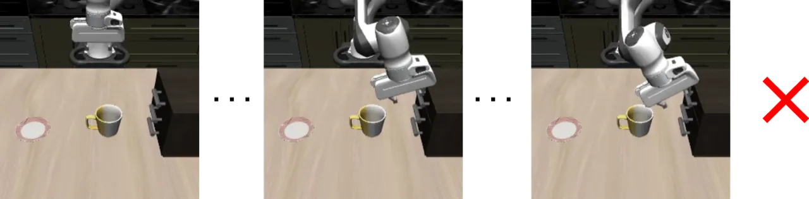

3D CAVLA 是一个基于 VLA 模型（OpenVLA-OFT）的微调框架，将 chain-of-thought 推理、基于点云的深度嵌入与任务感知区域兴趣（TA-ROI）池化三种机制有机融合，在 LIBERO 仿真基准上达到 98.1% 的平均成功率，并在未见任务上比基线提升 8.8%，同时在真实 Franka 机器臂实验中实现 25% 的成功率提升，且收敛速度快 3 倍。
VLA 模型通过端到端训练将视觉感知、语言理解和动作生成统一起来，在分布内任务上表现优秀，但面对新场景时泛化能力不足。现有方法主要依赖二维 RGB 感知，缺乏三维空间理解，导致机器人在复杂操作任务中难以推广到未见过的任务组合。
"Integrating reasoning within VLA training objectives can improve out-of-domain performance." — 论文核心主张
作者提出三个核心问题：（1）如何将结构化推理引入 VLA 训练目标？（2）如何利用深度信息增强三维空间感知？（3）如何让模型聚焦于任务相关的视觉区域？3D CAVLA 通过 chain-of-thought 推理分解、深度点云嵌入和 TA-ROI 池化三管齐下，系统性地解决上述挑战，且无需重设计基础架构，以 LoRA 微调方式即可叠加到现有 VLA 模型上。

3D CAVLA 在 OpenVLA-OFT 基础上叠加三个正交模块：chain-of-thought 任务分解、深度点云编码器和任务感知 ROI 池化（TA-ROI）。三个组件均以离线预计算方式融入训练，不改变基础 VLA 的推理接口，LoRA 微调使参数量增加极小。
利用冻结的大语言模型（GPT）将任务描述分解为可逐步执行的子步骤序列。例如，"Grab the ball and place it in the basket" 被改写为 "Locate ball → grasp at center → move over basket → release"。这种结构化分解帮助模型在未见任务中进行组合式推理，冻结 LLM 防止过拟合，生成的 CoT 指令在训练时与原始任务描述拼接后输入到 VLA。
将 RGB-D 输入通过相机内参反投影为三维点云，公式为：
再通过轻量级 PointNet 风格编码器（约 1M 参数）提取深度嵌入 dt，与视觉语言特征拼接后融合。推理开销极小（4.3 Hz vs. 基线 4.4 Hz）。

深度嵌入 dt 和 TA-ROI 特征 ṽtROI 在视觉语言特征拼接之前注入，保持 OpenVLA-OFT 整体架构不变。LoRA 微调应用于全模型，CoT 分解和 ROI 掩码均离线预计算，不增加实时推理复杂度。
实验在 LIBERO 仿真基准（分布内 + 10 个未见任务）和真实 Franka 桌面操作（10 个任务，5 个物体，2 个目标区域）上进行。基线包括 OpenVLA-OFT、Diffusion Policy（DP）、ECoT* 和 π₀，评价指标为任务成功率。
| 方法 / 配置 | Spatial | Object | Goal | Long | Average |
|---|---|---|---|---|---|
| OpenVLA（单摄像头 RGB） | 84.7 | 88.4 | 79.2 | 53.7 | 76.5 |
| CoA-VLA（单摄像头 RGB） | 85.3 | 93.1 | 85.8 | 55.0 | 79.8 |
| 3D-CAVLA（单摄像头 RGB） | 86.1 | 94.7 | 82.9 | 66.8 | 82.6 |
| π₀（双摄像头 + 本体感知） | 96.8 | 98.8 | 95.8 | 85.2 | 94.2 |
| OpenVLA-OFT（双摄像头 + 本体感知） | 97.6 | 98.4 | 97.9 | 94.5 | 97.1 |
| 3D-CAVLA（双摄像头 + 本体感知 + 深度） | 98.2 | 99.8 | 98.2 | 96.1 | 98.1 |
| 方法 | Average (%) | vs. OpenVLA-OFT |
|---|---|---|
| Diffusion Policy (DP) | 27.0 | −9.4 |
| OpenVLA-OFT | 36.4 | 基线 |
| ECoT* | 40.6 | +4.2 |
| 3D-CAVLA | 45.2 | +8.8 |
| 方法 | 已见任务 | 相似任务 | 未见任务 |
|---|---|---|---|
| Diffusion Policy | 84.2 | 46.0 | 21.8 |
| OpenVLA-OFT | 88.6 | 54.4 | 30.2 |
| 3D-CAVLA | 90.0 | 60.0 | 38.0 |

消融实验在 LIBERO 分布内和未见任务两个维度进行，验证各组件独立贡献：
| 配置 | LIBERO 已见任务 (%) | LIBERO 未见任务 (%) |
|---|---|---|
| 3D-CAVLA（完整） | 98.1 | 45.2 |
| w/o CoT | 97.4 | 42.4（−2.8） |
| w/o Depth | 97.0 | 41.0（−4.2） |
| w/o TA-ROI | 98.2 | 41.4（−3.8） |
消融结果表明三个组件对已见任务影响有限，但均显著提升未见任务成功率，尤其深度特征移除后未见任务下降最多（−4.2%），说明三维空间感知是泛化的核心驱动力。

"In several trials, the policy reverted to executing trajectories resembling previously seen tasks, indicating overfitting to the relatively small dataset used for fine-tuning." 在有限真实数据下微调时，策略容易回退到已见任务的轨迹模式，导致泛化受限。
"When approaching the target object, the robot frequently oscillated near the grasp point without completing the action, due to low variation in training images near contact and insufficient cues to trigger grasp closure." 接近目标时，训练数据在接触阶段多样性不足，导致机械臂在抓取点附近来回抖动而无法闭合夹爪。
TA-ROI 流程依赖 Molmo 目标检测和 SAMURAI 追踪的准确性。外部模型的误检或漏检会直接影响 ROI 掩码质量，进而影响策略性能。
训练数据中抓取角度多样性不足，导致模型对具有新颖方向的物体抓取失败，真实世界泛化仍存在瓶颈。
系统依赖多个冻结外部组件（GPT、Molmo、SAMURAI），增加了工程复杂度和部署难度，与端到端方案相比模块间耦合风险更高。